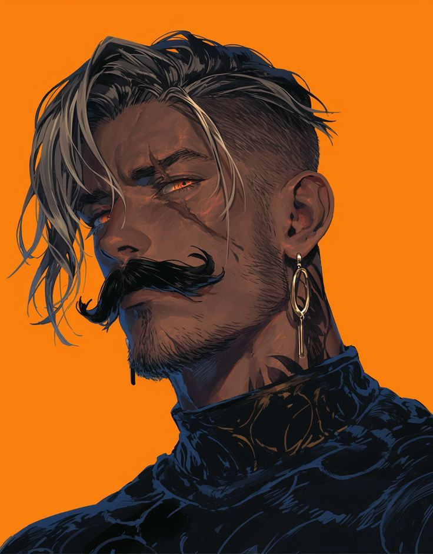

<main class="container">
  <section class="card">
    
    <h1>Arkon, o Guerreiro</h1>
    <style> 
       body{
        background-color: aquamarine ;
       }
       img {
            width: 200px;
            height: 200px;
       }
       li {
        background-color: #4d4b4b;
        padding: 10px;
        width: 130px;
        margin: 8px 0;
        border-radius: 8px;
        list-style: none;
        color : white;
    }
        p{
        background-color: #4d4b4b;
        padding: 10px;
        width: 300px;
        margin: 8px;
        border-radius: 8px;
        color : white ;
    }

    </style>
    <p class="descricao">Um guerreiro lendário das montanhas do norte, conhecido por sua força e honra.</p>
    <div class="habilidades">
      <h2>Habilidades</h2>
      <ul>
        <li>Força extrema</li>
        <li>Resistência</li>
        <li>Espada lendária</li>
      </ul>
    </div>
    <div class="caracteristicas">
      <h2>Características</h2>
      <p><strong>Classe:</strong> Guerreiro</p>
      <p><strong>Nível:</strong> 45</p>
      <p><strong>Elemento:</strong> Terra</p>
    </div>
  </section>
</main>